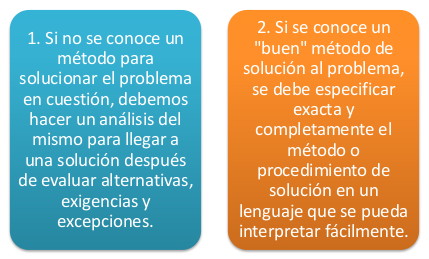
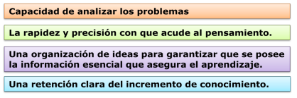
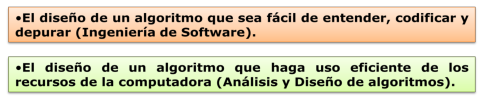
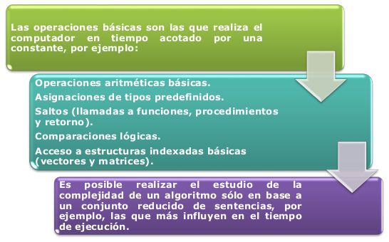
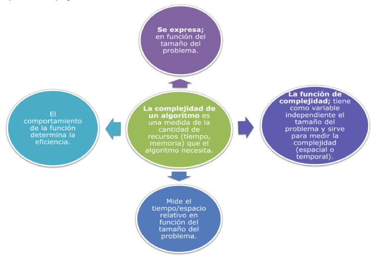
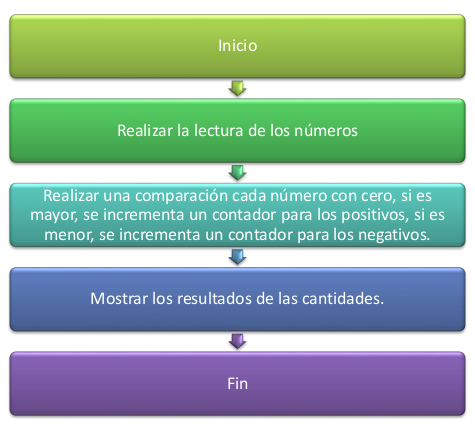
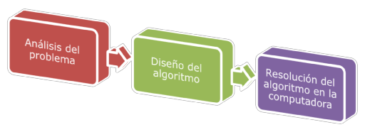

Temario
-
 Unidad 2-Comprendiendo los Algoritmos.
Unidad 2-Comprendiendo los Algoritmos. - - Cuáles son los datos de entrada: 4 números.
- - Cuáles son las salidas: La cantidad de positivos y la cantidad de negativos.
- - Un número es positivo cuando es mayor de cero y negativo cuando es menor de cero.
- - Diagramas de flujo,
- - Diagramas de Nassi - Schneiderman (N-S)
- Pseudocódigo.
- - Cuando el problema es dividido en partes más simples, es más fácil su comprensión. A estas partes se les llama módulos.
- - Los módulos son más flexibles, en caso de querer hacer modificaciones.
- - Las soluciones del problema son fáciles de demostrar.


Comprendiendo los Algoritmos
Formulacion y resolucion de problemas
Recordemos que los algoritmos son los procedimientos que se diseñan para la resolución de cualquier problema. De este modo, cuando se refiere a la construcción de un programa, nos estamos refiriendo a la construcción de un algoritmo. El algoritmo no es un concepto proveniente del campo de la computación, sino que es un término matemático.
Un algoritmo puede ser caracterizado por una función lo cual asocia una salida: s = f (E) a cada entrada E.
Se dice entonces que un algoritmo calcula una función f. Entonces la entrada es una variable independiente básica en relación a la que se producen las salidas del algoritmo. Cuando se tiene un problema para el cual debemos especificar un algoritmo solución, tendremos en cuenta varios puntos:

Ciertas destrezas mentales relacionadas con lo que ya se ha aprendido y que incluyen:

Sólo a partir de una buena formulación será posible diseñar una estrategia de solución. Es necesario aprender a desligar estos dos procesos. No se deben hacer formulaciones pensando paralelamente en posibles soluciones.
Analisis de Algoritmos
Los Enunciados comprenden, la mayoría de las veces, un texto asociado a una problemática, el cual plantea descriptivamente un escenario o requerimiento. Existen muchos enfoques para resolver un problema. ¿Cómo escogemos entre ellos? Generalmente hay dos metas en el diseño de programas de cómputo:

El análisis de algoritmos nos permite medir la dificultad inherente de un problema y evaluar la eficiencia de un algoritmo.

Concepto de Complejidad

Sería un error creer que los algoritmos son exclusivos de la informática. También son algoritmos los que aprendemos en la escuela para multiplicar y dividir números de varias cifras. De hecho, el algoritmo más famoso de la historia se remonta a la antigüedad: se trata del algoritmo de Euclides para calcular el máximo común divisor.
Construccion y Diseño de Algoritmos
El sistema para describir (escribir) un algoritmo consiste en hacer una descripción paso a paso con un lenguaje natural del citado algoritmo. Siendo estos un conjunto de reglas para solucionar un problema, estos tienen las siguientes propiedades:
1. Deberán seguir una secuencia definida por pasos hasta obtener un resultado distinto.
2. Podrán ejecutarse cada vez que se requiera para distintos datos de entrada.
Lo primero a tener presente cuando se diseña un algoritmo es su definición. Utilicemos un ejemplo para mostrar cómo debe resultar un algoritmo: Queremos determinar la cantidad total de números positivos y negativos cuando el usuario introduce 4 números reales.
Enunciado: Realizar un algoritmo que lea 4 números reales y muestre cuantos son positivos y cuántos son negativos.
Analizando el problema tenemos que,
El enunciado nos dice:
Nosotros sabemos que:
Diseñando la solución:

Otras claves en la solucion de problemas
Para la solución de problemas por medio de computadoras, deben cumplirse tres fases:

La exposición del problema es importante para el análisis y diseño de la solución del mismo. Para ello se necesita el apoyo de las herramientas de programación, como:
Las ventajas más importantes del diseño son: